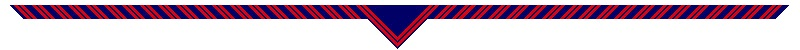
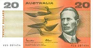

Laurel Sharpe, George Murray (Rama), Gordona Barbarie and Spud from Coogee Rovers at the opening.
History of the Group
Our Group was officially opened on the 29th of May, 1994, as the Kingsford Smith Extension Group. The Eastern Respite Centre approached the Scout Association to form a Scout Group open to disabled youth in the area and initial planning began on the 7th of November, 1993. Originally most of the Cubs and Scouts also attended the respite centre and due to numbers there was only one meeting a week which combined both sections. The group didn't receive their flag and scarves until November that year.
Mark Weisback (Tabs), George Murray (Rama), Cubs and Scouts with new scarves.
The children mainly came from Kingsford but there was already a 1st Kingsford Venturer Unit so another name had to be chosen. The original hall was in Kingsford Smith District so that name was used instead. One benefit of the name was that it wasn't attached to any particular suburb as most groups are, supporting the idea that anybody who wanted to join from any area was able to.
Our first hall was located in Pain Street, Maroubra. Many Scouting officials attended the opening, as a new Scout Group had not been started for many years. The founding committee members were President Randall Albury, Secretary Gordona Barbarie, Treasurer Michelle Murray and District Representative Laurel Sharpe. The founding leaders were Group Leader George Murray (Rama), Scout Leader Mark Weisback (Tabs) and Cub Leaders Charril and Meshel Schmidt. Some of the leaders were borrowed from 2nd Mascot Scout Group.

Merriam Weisback and Nerrel Schmidt with new Joey Mob.
In 1995 the Group did their first ANZAC march and Swimming Carnival as well as an outing to Fort Denison. In April 1995 the Group moved to the Florence Avenue hall in Eastlakes and in August a Joey Section was started with Joey Leaders Merriam Weisback and Nerrel Schmidt. With a new hall and a new section just started the Group asked various community groups for help. Generous fundraising efforts were made by the Soroptimists who held an auction that raised $1315 and later by the South Coogee Bowling Club and the Maroubra Lions Club who came together to host a charity bowls day which raised an additional $1445. The first group camp was also held with great success in October that year at Camp Couts.

Cubs and Scouts lashing a flag pole at the charity bowls day.
In 1996 a documentary was made about one of our Scouts with autism called Against All Odds - Finding William, so you can see a bit of what the hall, leaders and Group looked like back then.
In 2012 the Group moved to our current hall in Sparks Street, Eastlakes. The hall had originally been 1st Daceyville (Homenetmen)'s but they had disbanded. Currently our group has around 70 kids and a dozen leaders across the three Sections.
What does our scarf represent?
Every Groups' scarf has a different design and colour scheme. Our scarf has blue for the sky and red for the sunset, to remind us of Kingsford Smith and his aviation feats.
Who was Kingsford Smith?
Sir Charles Kingsford Smith (1897–1935) was an early pioneer of Australian aviation. His nickname was 'Smithy' and his plane was named the Southern Cross. He set a record for an around Australia flight in 1926. In 1928 he was the first to fly non-stop across Australia. In the same year he became the first to fly from Australia to New Zealand and after landing and refuelling he returned and so became the first to make a round trip as well. In 1930 he broke the record for the fastest England to Australia flight at just under 13 days. In 1934 he made the first flight across the Pacific Ocean from Australia to the US, which he only did because he was late for a London to Melbourne race he had been planning to enter.
Kingsford Smith didn't just make and break records, he started a commercial flight service between Australia and New Zealand in 1933 as well as helping to set up airmail services between Australia and England.
In 1935 Sir Charles Kingsford Smith and his co-pilot disappeared over the Andaman Sea near Burma while they were attempting to break another England to Australia flight record. Later a leg and wheel from the plane were washed ashore, but nothing else was ever found.
Kingsford Smith was knighted in 1932, which is why he has the title 'Sir'. Sydney Kingsford Smith International Airport was named after him, as was the suburb of Kingsford and of course our own Group. He was on the old $20 note and he even has one of Saturn's moonlets named after him!